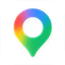
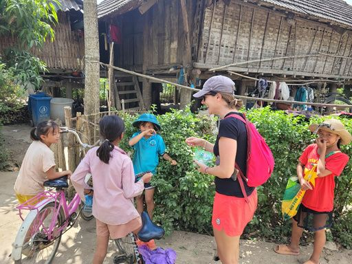

Visa, valise, argent, santé, savoir-vivre… Les 20 choses à savoir pour préparer votre voyage en toute sérénité, réunies par notre équipe francophone à Hanoï.
Chaque dossier approfondit une étape de la préparation : le bon moment, les lieux à voir, l’itinéraire. Pour l’essentiel en dix points, lisez aussi nos conseils voyage Vietnam.
Passeport valide au moins 6 mois après la date de retour prévue. Une difficulté avec l’e-visa ? Notre équipe vous oriente vers un service d’aide à l’obtention du visa.
02Bagages : voyager léger et pratique
Franchises pour les vols intérieurs avec Vietnam Airlines :
23 kg
en soute, classe économique
32 kg
en soute, classe affaires
10 kg
bagage à main
56×36×23
cm, dimensions cabine
Fermez bien vos bagages : les contrôles de sécurité peuvent être longs et rigoureux. En cabine, gardez l’indispensable, vos médicaments et les liquides en quantités réglementées.
03Préparer sa valise : les indispensables
La règle d’or : légèreté et adaptabilité. Matières respirantes (coton, lin), un imperméable léger en saison des pluies, et des vêtements chauds si vous allez dans le Nord (Hanoï, Sa Pa, Hà Giang) de décembre à février : le froid y est souvent humide et vif.
Vêtements en coton ou lin
Imperméable léger
Pull et veste (Nord, déc.–fév.)
Chaussures de marche
Lunettes de soleil
Crème solaire
Anti-moustiques
Produit antiseptique
Appareil photo
Sac plastique pour le linge
Tenue couvrant épaules et genoux
Passeport
Remarque importante
Prévoyez un sac à dos ou un bagage à main avec des vêtements et le nécessaire pour les 2 ou 3 premiers jours. En couple ou en famille, répartissez les affaires de chacun dans chaque valise : si l’une est égarée, personne ne se retrouve sans rien.
La plupart des grands hôtels proposent un service rapide.
Dans le quartier
Plus économique : de nombreuses blanchisseries dans les rues des grandes villes.
Chapitre 2Sur place, au quotidien
05Sécurité : soyez vigilants
Les incidents sont rares, mais restez vigilant dans les grandes villes comme Hô-Chi-Minh-Ville, où les vols à l’arraché depuis un scooter sont plus fréquents. Évitez de porter des bijoux et fermez vos valises dans la chambre d’hôtel.
06Décalage horaire
Hanoï · Hô-Chi-Minh-Ville
Heure locale
Paris · Bruxelles · Genève
Le Vietnam a 5 h (été) ou 6 h (hiver) d’avance
Montréal · Toronto
Le Vietnam a 11 h (été) ou 12 h (hiver) d’avance
Le Vietnam vit à l’heure GMT+7 toute l’année, sans heure d’été. Avec la France : +6 h en hiver, +5 h en été. Avec le Québec ou l’Ontario : +12 h en hiver, +11 h en été. Calez vos repas et votre sommeil sur l’heure locale dès l’arrivée.
07Monnaie et change
Monnaie locale
Le dong
VND · ₫
Changez vos euros ou dollars dans les banques, hôtels ou bijouteries.
Apportez des billets en parfait état : tachés ou déchirés, ils sont refusés.
Cartes bancaires largement acceptées dans les grandes villes ; prévoyez des frais bancaires.
08Pourboire : les usages locaux
Comme dans la plupart des pays d’Asie, on laisse un pourboire au guide et au chauffeur en fin de circuit, ainsi qu’aux porteurs et aux rameurs. C’est un signe de reconnaissance très apprécié. Évitez les montants trop petits, qui pourraient vexer.
Montants de pourboire conseillés
Pour qui
Montant indicatif
Guide
≈ 5 € par jour et par personne
Guide · groupe de 6 et plus
≈ 4 € par jour et par personne
Chauffeur
environ la moitié du pourboire du guide
09Boissons : les saveurs locales
1 à 5 $
une bière locale ou une petite bouteille d’eau. Les boissons ne sont généralement pas incluses dans les prestations.
Thé vert
omniprésent, servi après les repas ou dans la rue.
Café vietnamien
très fort, au lait concentré. À Hanoï, goûtez le café à l’œuf.
Jus frais
dans les stands de rue, pour se rafraîchir.
Chapitre 3Rester connecté
10Internet et électricité
Wi-fi gratuit
dans la plupart des hôtels et restaurants.
220 volts
compatible avec les chargeurs européens.
Adaptateur
à prévoir si vous venez du Canada.
11Carte SIM Vietnam et téléphone
Appeler
De votre pays vers le Vietnam
00 + 84 + indicatif de la ville + numéro
Du Vietnam vers votre pays
00 + code pays + numéro sans le 0
SFR, Orange… ont des accords de roaming (option Monde) : vérifiez avec votre opérateur.
Notre conseil
Une carte SIM locale
Viettel, VinaPhone ou MobiFone : comptez 250 000 à 600 000 VND pour une SIM touristique de 2 à 4 semaines avec 5 Go d’Internet par jour. Viettel offre la couverture la plus large, y compris en montagne.
Carte SIM et eSIM au Vietnam
Pour rester connecté pendant le voyage, le plus simple est d’acheter une carte SIM Vietnam ou une eSIM locale. Nous conseillons les opérateurs Viettel, VinaPhone ou MobiFone. Pour un voyage, la formule la plus pratique est la SIM touristique, vendue pour 2, 3 ou 4 semaines :
2, 3 ou 4 semaines
selon la durée de votre séjour.
5 Go par jour
d’Internet, renouvelés chaque jour.
250 000 – 600 000 VND*
carte SIM et forfait compris, quel que soit l’opérateur.
*Prix indicatifs constatés en octobre 2026 : ils varient selon la durée, l’opérateur et le point de vente. Faites confirmer le prix total et la date d’expiration avant de payer.
Où acheter ?+
Dans une boutique officielle ou un point de vente agréé à l’aéroport, avec votre passeport original. Demandez au vendeur d’activer la carte et de tester Internet sur votre téléphone.
SIM classique ou eSIM ?+
Votre téléphone doit être débloqué tout opérateur. Vérifiez la compatibilité eSIM de votre modèle avant l’achat ; sinon, choisissez une carte SIM physique. La 5G nécessite aussi un appareil compatible et une couverture disponible sur place.
Acheter avant le départ+
Les applications Airalo, Ubigi et Holafly, accessibles en français, proposent des eSIM pour le Vietnam. Installez l’eSIM avec une connexion Wi-Fi et suivez les consignes d’activation. Vérifiez la durée, le volume de données et les limites du partage de connexion.
Et les appels ?+
Les eSIM de voyage proposent souvent uniquement Internet, sans appels classiques ni SMS. WhatsApp fonctionne avec votre numéro habituel. Si vous souhaitez appeler des numéros vietnamiens, demandez un forfait incluant des minutes d’appel.
Éviter les frais supplémentaires+
Vérifiez d’abord si votre forfait habituel inclut le Vietnam. Sinon, le plus simple est de désactiver votre ligne habituelle dans les réglages ou de retirer sa SIM, puis de sélectionner la SIM de voyage pour Internet. Vous ne recevrez alors plus les appels ni les SMS sur votre ligne habituelle. Désactiver seulement les données à l’étranger ne bloque pas les frais d’appels. Certaines eSIM de voyage nécessitent d’activer l’itinérance : faites-le uniquement sur cette eSIM, selon ses instructions.
Commander une voiture ou une moto, à prix fixe, sans négocier.
Green SM
Taxis électriques, voiture ou moto, dans les grandes villes.

Google Maps
La navigation la plus fiable. Téléchargez les cartes hors ligne.
ChatGPT / Claude
Traduire un menu ou un panneau en photo, poser une question en français : plus naturel que Google Traduction.
Chapitre 4Santé & hygiène
13Santé : préparez-vous bien
Vaccin obligatoire
Aucun
Emportez une trousse de premiers soins, surtout si vous suivez un traitement. Les pharmacies sont bien approvisionnées, mais mieux vaut prévoir vos médicaments personnels.
Ne buvez pas l’eau du robinet : bouteilles capsulées ou boissons chaudes. Pour se brosser les dents, l’eau du robinet convient.
Glaçons
Sans danger dans les établissements fiables. En cas de doute dans un étal de rue, sans glace.
Cuisine de rue
Choisissez des plats cuits minute et des fruits de mer frais. Lavez-vous souvent les mains.
15Hôpitaux et cliniques internationales
Dans les grandes villes (Hanoï, Hô-Chi-Minh-Ville, Đà Nẵng), privilégiez les établissements internationaux : soins proches des standards occidentaux, personnel souvent anglophone ou francophone, services rapides.
Hôpital Français de Hanoï
HFH · Hanoï
Family Medical Practice
Grandes villes
FV Hospital
Hôpital franco-vietnamien · Hô-Chi-Minh-Ville
Gardez les coordonnées de l’établissement le plus proche et vérifiez que votre assurance voyage couvre ces cliniques privées, dont les tarifs peuvent être élevés.
Chapitre 5Culture & savoir-vivre
16Langue : trois mots qui ouvrent les portes
Xin chào
Bonjour
Cảm ơn
Merci
Ngon quá
Délicieux !
Même un effort minimal est toujours apprécié. Et un sourire sincère reste votre meilleur allié face aux barrières de la langue : c’est une forme de communication universelle, particulièrement valorisée au Vietnam.
17Cadeaux et souvenirs
À offrir, depuis votre pays
Échantillons de parfum, rouge à lèvres, t-shirts, stylos, spécialités de votre région. Dans les villages reculés, les fournitures scolaires sont très appréciées.

À rapporter du Vietnam
Boissons
Thé vert du Nord
Café des Hauts Plateaux
Produits locaux
Poivre
Baume du tigre
Artisanat
Objets laqués
Bambou
Soie
Broderies
Brocarts (Sa Pa, Mai Châu)
Céramique
Chapeau conique
18Savoir-vivre : les us et coutumes
L’observation et le respect sont la clé d’une belle immersion culturelle. Quelques comportements à éviter :
À table
Ne plantez jamais vos baguettes dans un bol de riz : cela symbolise la mort.
Temples et pagodes
Épaules et jambes couvertes : pas de shorts, mini-jupes ni débardeurs.
Bouddha
Évitez de rire ou de faire des commentaires désobligeants à son sujet.
Chaussures
Retirez-les avant d’entrer dans une maison ou une pagode.
Plages
La nudité n’est pas acceptée dans les espaces publics.
Garder son calme
N’élevez pas la voix. Donnez et recevez avec les deux mains, signe de politesse.
En public
Les démonstrations d’affection sont mal vues : les Vietnamiens sont pudiques.
Gestes
Ne montrez pas du doigt, n’utilisez pas vos pieds pour désigner quelqu’un.
Invité à un repas
Acceptez d’être servi et attendez que l’hôte vous invite à commencer.
19Photographier les habitants
C’est tout à fait permis. Dans les rues et les marchés, photographiez plutôt à distance. Pour un portrait rapproché, demandez l’autorisation, directement ou par l’intermédiaire de votre guide. Les Vietnamiens aiment souvent poser avec les visiteurs : commencez par un grand sourire et un « Xin chào ! ».
20Les expériences à ne pas manquer
Cuisine de rue
Sur un petit tabouret, au cœur de l’animation : phở, bánh mì, café…
Massage vietnamien
Techniques d’Asie du Sud-Est, nombreux spas de qualité dans les grandes villes.
Xe ôm
La moto-taxi, idéale pour les trajets courts en ville.
Karaoké
Le loisir convivial préféré des familles et des amis.
Les questions que nos voyageurs nous posent le plus souvent, de la réservation des vols au guide sur place.
Le Vietnam
1. À quoi ressemble le Vietnam en quelques mots ?
+
Nom officiel : République socialiste du Vietnam. Capitale : Hanoï.
Grandes villes : Hô-Chi-Minh-Ville (Saïgon), Đà Nẵng, Huế, Hội An, Cần Thơ, Hải Phòng.
Langue : vietnamien. Monnaie : dong (VND). Fuseau : GMT+7, sans heure d’été.
Superficie : environ 331 210 km² (comparable à l’Italie ou à l’Allemagne). Population : plus de 101 millions d’habitants.
Religion principale : bouddhisme (surtout mahayana) et culte des ancêtres.
2. Dans quelle partie du Vietnam dois-je aller ?
+
Le pays s’étire sur plus de 1 600 km et se divise en trois régions, chacune avec son climat, son histoire et ses trésors.
Le Nord, berceau de la culture vietnamienne : Hanoï, la baie d’Hạ Long, les rizières en terrasses de Mù Cang Chải, Sa Pa et Hà Giang, Ninh Bình, Mai Châu et Pù Luông, Cao Bằng et le lac Ba Bể.
Le Centre, entre héritage impérial et côtes : Huế, Hội An et ses lanternes, Đà Nẵng, Nha Trang.
Le Sud, tropical et dynamique : Hô-Chi-Minh-Ville, le delta du Mékong, les îles de Phú Quốc et Côn Đảo.
Chez Authentik Vietnam, votre voyage est entièrement conçu sur mesure : votre conseiller élabore un itinéraire selon vos envies, votre durée, votre forme et votre budget.
3. Quelle est la meilleure période pour voyager au Vietnam ?
+
Cela dépend de la région. Pour visiter tout le pays, mars–avril est idéal.
Janvier–février : Nord frais et brumeux, Centre et Sud parfaits pour le plein air et la plage.
Mai à septembre : chaud et humide (souvent 37 °C au Nord et au Centre en été), saison des pluies au Sud.
Octobre à décembre : bel automne au Nord, pluies et typhons au Centre (Huế, Hội An), Sud sec.
4. Comment réserver mes vols internationaux vers le Vietnam ?
+
Les agences locales comme Authentik Vietnam ne réservent pas les vols internationaux. Nos conseils :
Comparez les prix : Skyscanner, Kayak, Liligo (cochez « dates flexibles »).
Consultez les agences en ligne : Ebookers, Go Voyages, Opodo.
Vérifiez directement chez les compagnies, souvent plus souples en cas de modification.
Vols directs : Vietnam Airlines, Air France. Avec escale : Qatar Airways, Emirates, Cathay Pacific, Singapore Airlines, Turkish Airlines. Petits prix : Air Asia.
5. Authentik Vietnam s’occupe-t-elle du visa ?
+
Vous pouvez demander vous-même l’e-visa (90 jours, entrées multiples) sur evisa.gov.vn, ou profiter de l’exemption de 45 jours selon votre nationalité. En cas de difficulté, nous proposons un service d’assistance visa. Le passeport doit être valide au moins 6 mois après le départ.
6. L’assurance voyage est-elle comprise dans le prix ?
+
Non. Les assurances de votre pays d’origine sont souvent plus avantageuses et plus simples à gérer.
Votre agence
7. Authentik Vietnam est-elle une agence professionnelle et fiable ?
+
Fondée en 2012, Authentik Vietnam détient une licence de tour-opérateur international délivrée par l’Administration du tourisme du Vietnam. Des milliers de voyageurs accompagnés, 98 % de satisfaction, et des recommandations sur le Routard, Tripadvisor ou le Petit Futé.
8. Suis-je protégé en voyageant avec Authentik Vietnam ?
+
Oui. En tant qu’agence agréée, Authentik Vietnam a déposé une garantie financière de 250 millions de dongs auprès d’une banque, qui assure le remboursement en cas de non-prestation. Une assistance 24/7 est assurée pendant tout le voyage.
9. Quel est l’esprit de vos circuits ?
+
Des voyages authentiques et personnalisés : rencontres locales, itinéraires originaux, loin du tourisme de masse, au rythme qui vous convient.
10. Comment réserver un voyage avec Authentik Vietnam ?
+
Envoyez une demande avec vos souhaits : votre conseiller prépare un devis adapté, modifiable jusqu’à entière satisfaction. Un acompte de 30 % (virement ou carte) confirme les réservations ; le solde se règle avant ou au début du séjour.
11. Puis-je demander des modifications au programme ?
+
Oui, à tout moment. Des frais peuvent s’appliquer pour les changements faits après confirmation ou pendant le voyage.
12. Nous n’avons aucune idée concrète. Pouvez-vous nous aider ?
+
Bien sûr. Contactez-nous même sans plan précis : nos experts construisent un programme selon vos envies et votre budget, dans les meilleurs délais.
Logistique du circuit
13. Voyagerons-nous avec d’autres personnes ?
+
Nos circuits sont sur mesure et privatifs, avec chauffeur et guide francophone. Nous proposons aussi quelques circuits en petit groupe (7 personnes maximum) : demandez les dates et les prix à nos conseillers.
14. Quelle compagnie assure les vols intérieurs ?
+
Vietnam Airlines en priorité (Airbus, Boeing, ATR 72 sur certains trajets courts). Pour l’Indochine : Vietnam Airlines, Cambodia Angkor Air, Lao Airlines.
15. Comment sont les hôtels prévus dans le programme ?
+
Sélectionnés selon votre budget et vos préférences : des hôtels de qualité, bien situés, dont nous contrôlons régulièrement les services.
16. Puis-je réserver moi-même les hôtels ?
+
Nous le déconseillons. Si vous le faites, limitez-vous aux grandes villes (Hanoï, Hô-Chi-Minh-Ville) et à un hôtel central : l’agence ne pourra pas intervenir en cas de problème. En province, l’hébergement est toujours inclus dans le forfait, pour garantir la qualité du programme.
17. Comment se passe la nuit chez l’habitant ?
+
Nous sélectionnons des familles offrant un confort de base : matelas, couvertures, moustiquaires et eau chaude. Dans la plupart des lieux, vous avez désormais une chambre et une salle de bain privées.
18. Faut-il apporter un matelas ou un sac de couchage ?
+
Non, les familles d’accueil fournissent matelas, couvertures et moustiquaires.
19. Comment sont les repas pendant le voyage ?
+
En général en demi-pension (petit-déjeuner et déjeuner), le dîner restant libre pour découvrir la cuisine locale. Pension complète pour les croisières et les grands groupes. Chez l’habitant, trois repas par jour.
20. Quels véhicules utilisez-vous ?
+
Des véhicules récents et climatisés (Ford, Toyota, Mercedes…), adaptés au nombre de passagers :
2 personnes : 7 places
3 personnes : 7 ou 16 places
4 à 7 personnes : 16 places
8 à 15 personnes : 29 ou 35 places
16 à 20 personnes : 35 ou 45 places
21. Les transports des journées libres sont-ils inclus ?
+
Non. Les journées « sans guide ni chauffeur » signifient que les déplacements de ces journées sont à votre charge.
22. Puis-je louer une voiture sans chauffeur ?
+
C’est fortement déconseillé et pratiquement impossible : le permis de conduire étranger n’est pas reconnu au Vietnam, et la conduite locale est très difficile pour un non-initié.
23. Quels tarifs pour les enfants ?
+
Des tarifs réduits pour les enfants de moins de 12 ans : indiquez-nous leur âge.
24. Les balades à moto et à vélo sont-elles difficiles ?
+
Non, elles restent courtes : environ 20 km à moto et 10 km à vélo. Des alternatives existent selon la destination : moto-taxi avec chauffeur, pousse-pousse, tuk-tuk ou voiture.
25. Comment est le train au Vietnam ?
+
Le réseau compte une seule grande ligne de plus de 2 000 km, de Lào Cai à Hô-Chi-Minh-Ville, à environ 60 km/h. Plus bruyant qu’en Europe, mais authentique ! Pour les longs trajets (Hanoï – Sa Pa, Hanoï – Huế, Nha Trang – Saïgon), nous réservons des cabines couchettes de classe supérieure, climatisées, pour 4 personnes.
Sur place
26. Faut-il un guide ? Comment sont-ils choisis ?
+
Oui, le guide fait la réussite du voyage, tout en restant flexible selon vos envies. Nos guides francophones sont diplômés de l’université, maîtrisent parfaitement le français, détiennent une licence professionnelle, et sont passionnés et à l’écoute.
27. Combien de guides pendant le voyage ?
+
Un guide local par région. Vous êtes autonomes pendant les trajets en avion ou en train, et accueillis à chaque étape.
28. Puis-je voyager sans guide avec Authentik Vietnam ?
+
Oui, pour des trajets simples comme Hanoï – baie d’Hạ Long, avec seulement un chauffeur. Attention : les chauffeurs ne parlent ni anglais ni français.
29. Puis-je m’arrêter pour photographier pendant les trajets ?
+
Oui, nos circuits sont souples : arrêts possibles pour les paysages et les rencontres. La photo est autorisée dans la plupart des lieux visités, pagodes, musées et sites historiques compris.
30. Comment vous contacter sur place en cas de problème ?
+
Votre conseiller en voyage connaît votre dossier et peut ajuster le programme. Pour les questions du quotidien, votre guide francophone est le premier contact. En cas d’urgence majeure : hotline WhatsApp +84 (0) 91 2 12 10 91.
de tour-opérateur, Administration du tourisme du Vietnam
Garantie financière
250 millions de dongs déposés en banque pour protéger les clients
24/7
Assistance pendant tout le voyage
5,0Tripadvisor2 028 avis
4,9Google940 avis
4,9Trustpilot342 avis
Prêt à partir ?
Un voyage conçu sur mesure, de A à Z
Dites-nous vos envies, vos dates et votre budget : votre conseiller francophone à Hanoï vous propose un itinéraire qui vous ressemble, modifiable jusqu’à entière satisfaction.